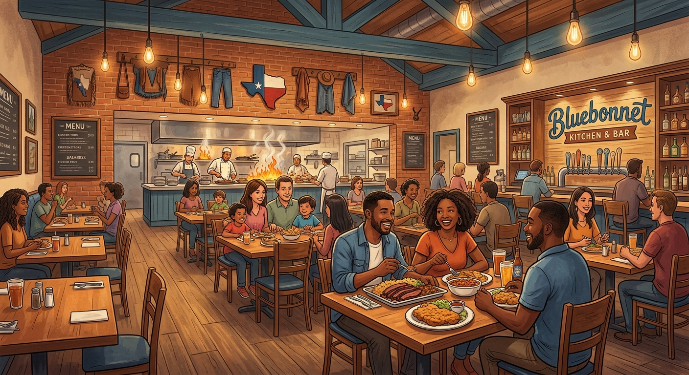

AI for casual dining restaurants.
A serious business consultation for a casual dining restaurant owner — see exactly what it uncovers, what it recommends, and why, in a full simulated example.
Owning a casual dining restaurant: where growth actually gets stuck

Most casual dining restaurant owners aiming to scale annual revenue from $2.1M to $2.7M believe they need to spend more on top-of-funnel marketing or digital advertising. However, growth typically stalls in weekend front-of-house and kitchen capacity constraints, manual administrative drag, and un-nurtured guest databases.
In the simulated consultation, the fictional restaurant operates two locations (Austin main site with 120 dining seats, 16 bar seats, 40-seat patio, and full bar; Round Rock with 90 seats, beer and wine only) with 26 team members generating $2,100,000 in annual revenue ($175,000/month) across ~5,500 monthly covers at an average check of $32. While Friday and Saturday dinner creates peak momentum with 35-minute wait times and 120 parties leaving monthly, significant revenue leaks through operational bottlenecks and manual workflows.
Behind the dining room front lines sit severe guest leakage and administrative overhead: 1,100 out of 3,200 loyalty members are lapsed with no visit in 90 days (managed by only an occasional monthly email blast), reservation no-shows run at 12% (~228 covers monthly), 28 out of 40 monthly catering inquiries go unbooked due to slow follow-up (quotes taking up to 48 hours with a single call), and Round Rock relies entirely on phone orders and paper waitlists. Additionally, weekly report consolidations and inventory counts consume management time, while prime costs sit at 63% (food 31%, labor 32%, waste 4%) against an 8% net profit margin ($14,000/month).
The owner spends 55 hours per week (45 on operations, 10 on admin), capping the time available to develop menus and drive catering sales. With key-person dependency on Austin GM Carlos Mendez (who has 6 hours weekly for implementation) and Round Rock GM, operational expansion requires careful automation and change management.
- Weekend front-of-house and kitchen capacity bottlenecks with 35-minute waits and 120 monthly walk-outs
- 1,100 lapsed loyalty members out of 3,200 with no automated win-back sequence
- 12% reservation no-show rate (~228 covers monthly) eroding table revenue
- 28 unbooked monthly catering inquiries out of 40 due to 48-hour quote lags and single-call follow-ups
- Manual paper waitlists and phone-only ordering at Round Rock limiting weekday lunch covers
- Prime costs at 63% (food 31%, labor 32%, waste 4%) with an 8% net profit margin ($14,000/month)
- An owner spending 55 hours weekly aiming to redirect time into menu development and catering sales
- Rigorous expansion gates ($2.7M annual run rate for 2 quarters, prime cost <60%, catering waitlist of 8 events, $180k cash) before opening a third site
What the simulated consultation uncovered
The consultation began by auditing the owner’s operational numbers and financial baseline. The diagnosis revealed that growth from $2.1M to $2.7M is restricted by weekend capacity bottlenecks during peak dinner hours and manual administrative drag, while weekday lunch (especially at Round Rock) offers untapped headroom.
From that diagnosis came four opportunities, prioritized with the owner — who confirmed the exact sequence during the consultation review:
1 · Targeted Lapsed Loyalty Reactivation Campaign
Export 1,100 lapsed loyalty members from Toast, segment by past visit frequency, and deploy automated multi-touch win-back sequences offering targeted incentives respecting SMS caps (max 2 texts/month). Re-engaging 5% of lapsed members projects ~$4,048/month in recovered off-peak revenue.
2 · Automated Reservation Reminders and Intake Verification
Integrate OpenTable and Toast to send automated SMS/electronic confirmation reminders at booking, 48 hours, and 24 hours. Recovering half of the 228 monthly no-show covers preserves ~$3,648/month in revenue and cuts no-shows toward the 8% target.
3 · Digital Ordering and Intake for Round Rock
Implement Toast-integrated online ordering and digital waitlist intake for Round Rock, replacing paper waitlists and phone-only ordering to capture uncaptured weekday lunch demand and streamline operations before the lease renewal.
4 · Streamline Catering Follow-Up and Pipeline Conversion
Deploy an automated catering CRM pipeline workflow with automated 48-hour follow-up task reminders, routing all menu descriptions through mandatory head chef review for allergen and dietary accuracy to capture unbooked quotes.
All recommended initiatives fit within the owner’s financial parameters ($3,000–$5,000 monthly operating budget, up to $12,000 one-time setup budget with a 6-month payback expectation). Implementation is sequenced around Austin GM Carlos Mendez's 6 hours per week of pilot time, protected by strict TABC, ServSafe, BAA, and chef-approval guardrails.
What makes this a serious business consultant
The consultation operates as an analytical partner, not a static software tool. It builds an understanding of restaurant unit economics, kitchen station throughput, table turn rates, and staff constraints before formulating action items. Recommendations cite concrete revenue figures, precise operational times, and verified staff limits.
- Root-cause diagnosis over top-of-funnel hype. Identifies that reactivating lapsed loyalty guests and capturing existing catering inquiries yield higher returns than generic ad spend.
- Owner-driven priority alignment. Ranks projects strictly against implementation capacity (Carlos's 6 hours/week) and direct financial return.
- Draft review protocol. Integrates specific feedback from the owner, correcting financial assumptions, model calculations, and opportunity ranking.
- Strict compliance boundaries. Respects TABC alcohol licensing, ServSafe food safety, labor laws on overtime, and SMS privacy limits (max 2 texts/month) with zero auto-generated menu descriptions without chef sign-off.
- Quantified pilot milestones. Governed by explicit 90-day targets (+150 lapsed loyalty reactivations, 12% to 8% no-show reduction, 2.1 to 2.3 table turn rate increase).
- Capacity-aware planning. Ensures extra cover growth targets weekday lunch and off-peak slots rather than adding demand to saturated Friday and Saturday dinners.
How the consultation follows the Vcrsoft Way
Every consultation follows the same five steps — understand the business, diagnose the growth problem, identify AI-enabled solutions, prioritize opportunities, and deliver an actionable strategy. Read the framework →
Understand the business
How you win customers, deliver work, and make money today — in your own words and numbers.
Diagnose the growth problem
Find the constraint actually holding growth back, and test it against your own evidence before believing it.
Identify AI-enabled solutions
Practical ways AI could help, matched to real problems in your business — not generic tool ideas.
Prioritize opportunities
Ranked on value, feasibility, cost, risk, and time to benefit — and argued with you, not handed to you.
Deliver an actionable strategy
A sequence, a 30-day plan, and measures of success, in a report you review before anything is final.
Simulated transcript and report
Review the full simulated interview and the final growth strategy report displayed in the right-hand panel above. Both documents are from the fictional demonstration business described — not a real client.